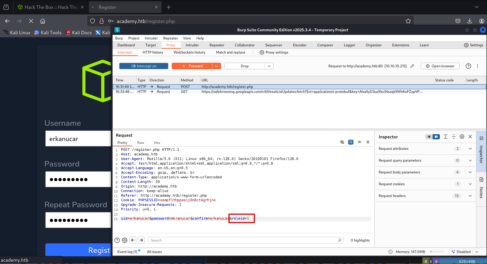
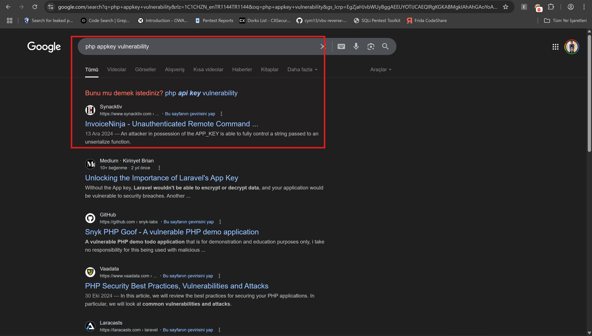

Hi everyone, in this article I would like to analyze Academy from HackTheBox platform.
Before I begin, let's attach our ip address to customized domain name ->
nano /etc/hosts
I wanted to conduct nmap scan & whatweb enumeration seperately to identify whether there is application or not. Plus if there is application, I iterate the whatweb scan twice.
Full-Scope Faster Scan:
sudo nmap -sV -sC -T4 -p- academy.htb
Lightweight Version Scan:
sudo nmap -sV -Pn --script=vuln academy.htb
Rustscan:
rustscan -a academy.thm
Duration was longer than I expected on nmap scans.

Due to my VPN, EU VIP4 I got high ping responses ->

Finally, I was ready to see port scan & whatweb results ->
Whatweb returned such result ->

We have application running on port 80 ->

Nmap results ->
I was able to retrieve juicy endpoints while nmap was conducting NSE vuln ->
Moreover, versions include a lot of CVE exploits on SSH and Apache 2.4.41 according to scan results. Having direct endpoints via HTTP enum resulted in efficient time management.
How to interact with HTTP on browsers ?
As all you know, giving URI format is a daily basis method to interact with HTTP protocol ->

On the other hand, simply appending on last sequence to domain :80 is also useful method ->
During the registration process to the web application, I was also conducting fuzzing on background ->

I used dirsearch + gobuster combination to pass fuzzing phase so as to examine each endpoint rapidly.
Dirsearch ->

Gobuster ->
After a couple of attempts in the application, I did not get move further then I started to analyze every packet with Burpsuite.
There was a form retrieving username:password combination from user ->
After I created my first account, except the vulnerable SSH and Apache version, I did not see anything vulnerable on the application. Then I decided to register as normal user.
When I capture the POST request, I detected a parameter called roleid=, most likely responsible for user privileges. ->

Moreover, I switched the parameter 0 to 1 ->

However, I was looking for cookie parameter in order to grant my privileges on the application. ->

After an admin user generation, I hesitately logged as admin on admin.php ->

It looks like I found a credentials then I preferred this on SSH as credentials ->
It was not possible to authenticate as user cry0l1t3 ->

What's more, I found a domain that was working on staging environment ->
I also added it on my /etc/hosts file ->
Now, after I reached target domain, I encountered with a error output corresponding system sensitive php scripts and mysql database credentials ->
In addition to the these information disclosures, I discovered admin use of the server ->
Let's dump the administrator user credentials from DB & start post exploitation phase:
Using this juicy resource to understand how we can interact with mysql client ? ->
https://www.bytebase.com/reference/mysql/how-to/top-mysql-commands-with-examples/
Due to my previous rustscan result, instead of using port number as 3306 I wanted to use 33060 ->
Although I successfuly put necessary credentials to mysql client, I was not able to connect DB ->

Then I asked Laravel to searchsploit to find useful vulnerabilities ->

I solely knew that application envionment app key was leaked ,so there should be a way to use it.
dBLUaMuZz7Iq06XtL/Xnz/90Ejq+DEEynggqubHWFj0=
Whatweb could not get PHP version information or framework information. Besides, Wappalyzer also did not too. Therefore, I also used to retrieve version through Burpsuite. Moreover, Burpsuite could not find version number of PHP.
I tried to authenticate DB ,yet it did not work. Finally, I googled the PHP + appkey combination ->

Gotcha ! ! !
Let's check PoC ->
cat /usr/share/exploitdb/exploits/linux/remote/47129.rb
It looks like Ruby file, most common extension depicts a Metasploit Framework exploit. Then I deployed msfconsole ->
msfconsole
search Laravel
use 6

then RUN:

I wrongly set APP_KEY then removed base64 string from appkey. After that switched VHOST parameter as my virtual host dev-staging-01.academy.htb.
then I got shell via Metasploit Framework.
I wanted to use manual exploitation to force myself to prepare OSCP exam. On GitHub I found a manual exploit to get direct reverse shell ->
https://github.com/aljavier/exploitlaravelcve-2018-15133
Follow the steps that I provided so as to prepare exploit ->
Because of the recent updates made by OffSec, we were no longer use internal Python package management system. Therefore, I created virtual environment for the exploit ->

Once you run exploit, you will encounter an usage manual ->

I did not want to execute command instead I needed to get shell via exploit ,so I retrieved a command --interactive on the official GitHub page of exploit.
Do not forget to give full URL ->
Now we got fully manual reverse shell via PoC exploit called exploitlaravelcve-2018-15133.
After I got shell, I started to manually enumerate server via sending consecutive commands ->

Then I discovered sensitive files. That's why, let's check what kind of information that includes ?
Observe that I prompted the same file, where debugger renders on browser ->
I want to keep forward to binary exploitation whether it is possible or not. Hence, linepas would be suitable ->
https://github.com/peass-ng/PEASS-ng/releases/tag/20250601-88c7a0f6
Deploy a python web server to transfer linpeas to target ->
It is clear that we have both python3 and curl as binary in target server ->
Check for how to download files via curl:
https://www.digitalocean.com/community/tutorials/workflow-downloading-files-curl
I was not able to send it to the target. Let me try binary exploitation via python3 ->
Again it did not work at all.

Try manually read file paths repetitievly ->
cd ..; ls -al
cd ../..; ls -al
cd ../../academy; ls -al
cd ../../academy; cat .env
After this combination I found another application including different DB user:pass variation ->
Attempt authentication via mysql ->

It did not work ,but let me try also SSH:
Bingo ! ! !
Fuzzing approach worked for cy0l1t3 user :)

Capture user.txt flag from /home/cry0l1t3 directory ->

Generally, you can use temp folder to run & build script because most of the time this directory has privileges to do such tasks. That's why, I moved tmp folder then sent linpeas.sh ->

Wait for the linpeas.sh task to complete it enumerates all the kernel + OS ->
Kernel PoC exploit's occurence can be seen as below ->

I tried and abuse Polkit exploit ,yet it did not work on my instance ->

After further investigations, I discovered a credential looks like mrb3n user's credentials ->

Cyberchef successfully identified the type of the data ->
YESS ! ! ! It worked.
user mrb3n can run composer binary ->

Let's check gftobins ->

Composer binary exploitation method worked clearly ! ! !
Get root.txt flag from simply from /root/ directory ->
cat /root/root.txt